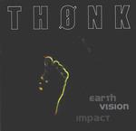

Home Artist links Label link

Thonk - Earth Vision Impact
| Artist: | Thonk |
| Title: | Earth Vision Impact |
| Label: | Galileo Records GR005 |
| Length(s): | 51 minutes |
| Year(s) of release: | 2001 |
| Month of review: | [07/2001] |
Line up
Marc Grassi - piano, keyboards
Fredy Schnyder - bass, guitar
Falvio Mezzodi - drums, percussion
Tracks
| 1) | Sulm | 1.51
|
| 2) | Thonkland | 4.39
|
| 3) | Square Root | 5.44
|
| 4) | Pomme | 8.17
|
| 5) | Insharp | 6.23
|
| 6) | Garden | 8.29
|
| 7) | Ela | 8.14
|
| 8) | Rak | 7.47
|
Summary
A Swiss trio and another new band on Galileo, produced by
Pär Lindh no less.
The music
Soft and sad acoustic guitar lined with mellotron open Sulm, the short
opener. Then the music turns for the darker and sinister ending with soft
thunder on percussion. Thonkland is more up-beat, not just an intro.
Heavy and dark organ, nicely audible bass and plenty of stop-and-go playing.
The music has a strong groove, but also a very somber feel. People will
be reminded of Anekdoten and the other Swedes here, but the music is quite
heavy and with a strong focus on the rhythm section.
After a minute or so we break into a percussive piano part with the bass
playing melodic lead. At the end the music goes full blast. A great opening.
Again heavy organ, now of the more brimming type, but the opening makes me
think we move into the direction of say Tangerine Dream. Again strong themes
on this song, but the way the parts and themes are strung together seems rather
arbitrary. The keyboard theme in the middle is a variation on the marvellous
organ solo from Close To The Edge. Then the song becomes more rhythmic.
Pure progressive rock with its root dug deep in both the old days, but
rhythmically and sound wise in the here and now.
Quick percussive;y played piano opens Pomme. The keyboards that ring through
the somewhat classical sounding piano remind me a bit of Firth Of Fifth (the
sound). The music is rather playful here with repetitive runs. Moody piano runs
take over now, building a kind of tension with loosely interjected percussion.
Heavy keyboards and percussion open Insharp. A bit monotonous maybe, but
it still grooves. Although the elements of the music are to my liking, there
is something missing here. A certain sense to it all. This is more apparent on
the panicky opening of Garden. Again heavy organ playing on this one.
The song ends with a strong driving part.
Ela has strong thematic material, the bass nicely humming along, percussive
piano, a surprisingly lot of piano. Some classically oriented passages in here
as well. The acoustic guitar playing is subtle and melodic.
The final track has droing keyboard runs and a smooth guitar sound.
Very repetive with a touch of abrasiveness, especially halfway with the double
bass drum. Marvellous Anekdoten like material.
Conclusion
Anekdoten, Anglagard, Big Elf, Yes, these things I tended to hear on this
album, but that is not all. These bands seem to have delivered some of the
stylistic elements (in some cases a melody), but what the band does with it
is something else again and they add enough of their own ingredients: quite a
bit of piano playing, overall darknes, strong themes, is great at evoking moods
and varies from classically oriented pianoruns to loud brimming organs with
thunderous percussion. Just to give you an idea of course. And the band pulls
it off...for the most part. "Only" for the most part because compositionwise
I think the band can still gain strength. Some tracks already fulfill that
promise, but in some cases, I thought the music lacked a certain sense.
Compared to recent debutantes, they certainly have a headstart: their own
sound, good atmosphere building qualities, great themes, great variation with
an album that shall delight fans of abovementioned bands.
© Jurriaan Hage